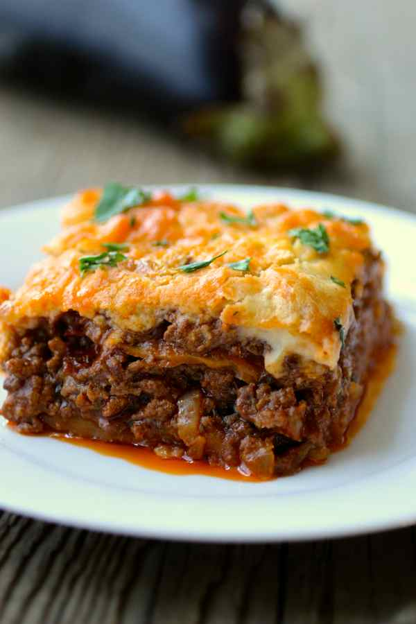

Moussaka

Description
Moussaka is beloved Balkan and Middle East dish. Its preparation depends on the region. In Bulgaria Moussaka is based on potatoes and ground meat. The meal is served warm and Bulgarians eat it very often simply because it's super delicious and easy to cook.
Moussaka is the perfect dish if you are in Bulgaria and want to experience traditional recipes along with banitsa, shopska salad and tarator. The yogurt and eggs layer on top gives the dish a unique taste which you can't find anywhere else. The Greek Moussaka uses eggplant rather than potatoes.
Ingredients
- ¾ pound ground beef (85% lean)
- ¾ pound ground pork
- ½ cup olive oil, divided
- 1 large carrot, finely chopped
- ½ yellow onion, finely chopped
- ¾1 (14.5 ounce) can diced tomatoes
- 1 red bell pepper, finely chopped
- 2 tablespoons paprika
- 1 tablespoon salt
- 2 bay leaves
- ½ teaspoon cayenne pepper
- 6 russet potatoes, peeled and cut into 1/2-inch dice
Steps
- Heat a large skillet over medium heat. Add ground beef and ground pork and cook until brown and crumbly, 5 to 10 minutes. Drain and discard fat. Add 1/4 cup olive oil, carrot, onion, celery, parsley stems, and tomatoes. Mix to combine. Stir in bell pepper and season with paprika, salt, pepper, bay leaves, and cayenne pepper. Cook until vegetables start to soften, about 10 minutes.
- Meanwhile, preheat the oven to 400 degrees F (200 degrees C).
- Transfer meat mixture to a large baking pan.
- Heat remaining 1/4 cup olive oil in a large skillet and cook potatoes until lightly browned, about 10 minutes. Transfer to the baking pan and mix well with the meat mixture.
- Bake moussaka in the preheated oven for 45 minutes. Remove baking dish from the oven and mix in chopped parsley leaves.
- Stir eggs, yogurt, flour, and baking soda together in a bowl until it turns into a spreadable mixture. Pour over the meat mixture in the baking dish.
- Return baking dish to the oven and cook until the top is golden brown, about 15 more minutes